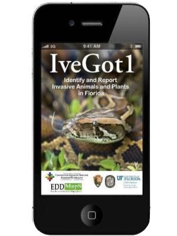
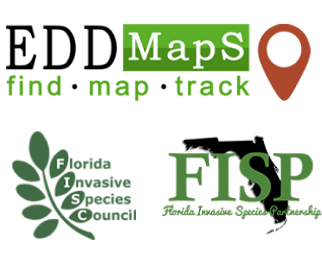

Forming cooperative partnerships between federal, state, local, and tribal agencies, private organizations, and individuals interested in invasive species management

Download the IveGot1 app.
Report sightings of invasive species using the IveGot1 app

Contact Us Dan Quinn Florida Fish and Wildlife Conservation Commission (239) 340-7738 daniel.quinn@myfwc.com
Site Map About What is a CISMA What is an Invasive Species Invasive Species Invasive Animals Invasive Plants Get Involved Events Southwest FL CISMA at Work Our Partners
Learn More Education Resources & Publications Statewide Private Landowners Assistance Resources Local Private Lands Assistance Program Early Detection & Rapid Response